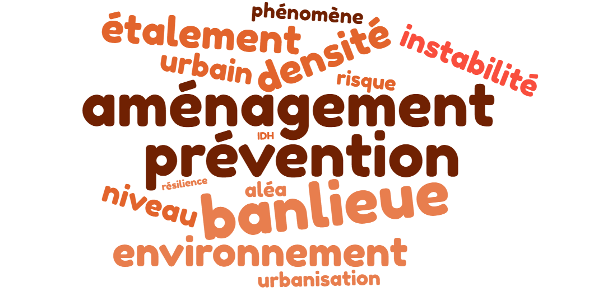
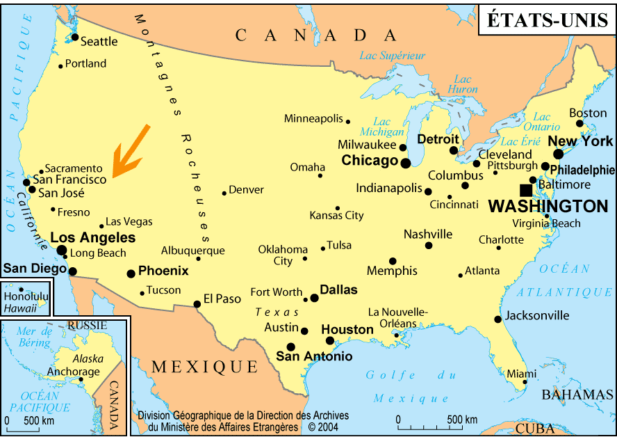
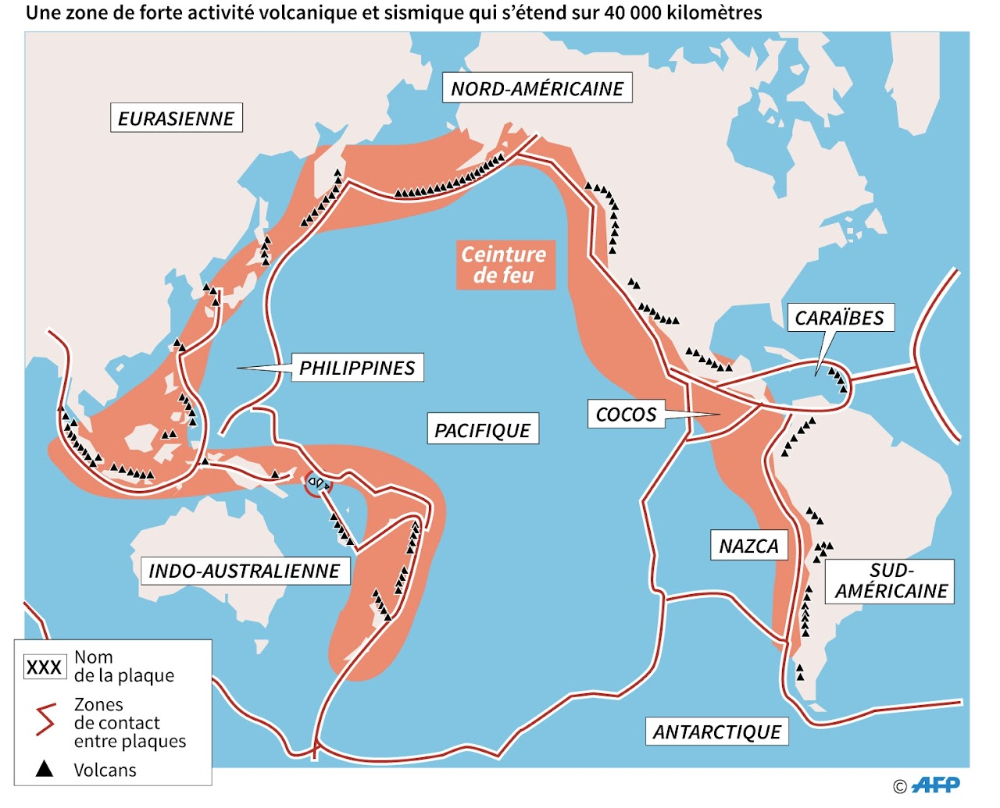
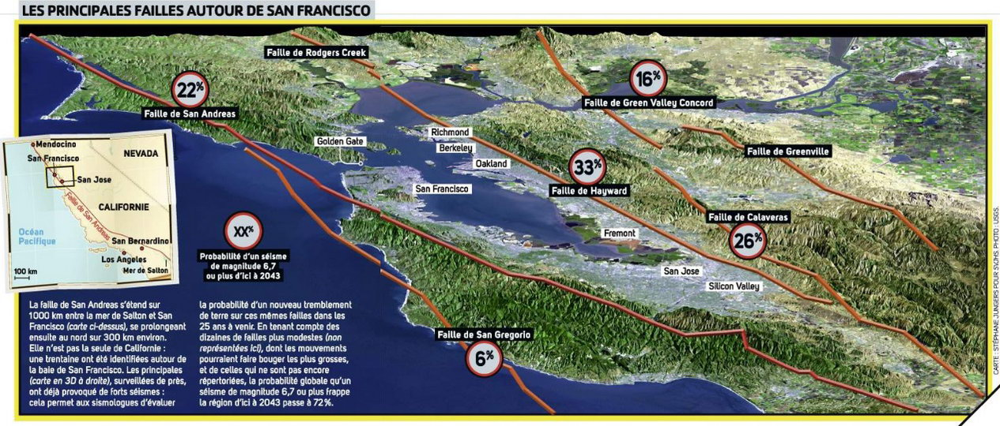
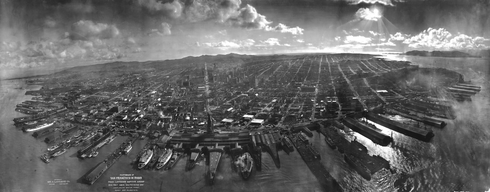
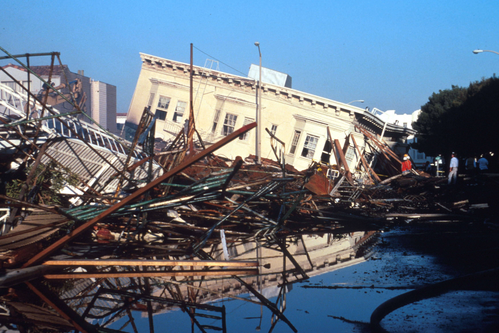
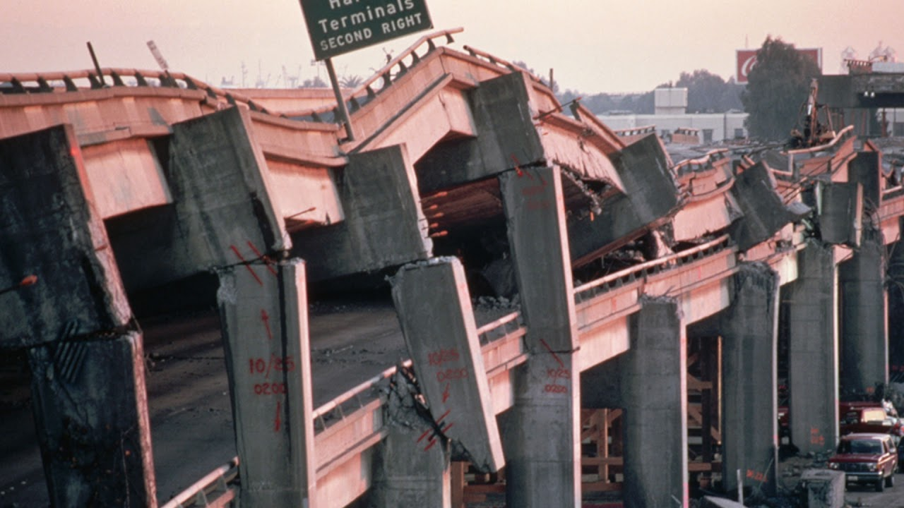

Géographie et éducation à la citoyenneté
03 / 11 territoires
La ville soumise à des risques naturels
Territoire urbain · Local · Vivre avec le risque naturel
- aménagement
- banlieue
- concentration
- densité
- environnement
- étalement urbain
- instabilité
- niveau de développement
- prévention
- risque naturel
- urbanisation
- San Francisco

Mise en contexte
Une ville soumise à des risques naturels devrait être organisée de manière à assurer la sécurité de sa population. Des mesures doivent être prises pour limiter les dégâts associés aux catastrophes naturelles. Ce n'est pas le cas partout sur la planète. Deux enjeux s'y manifestent : composer avec un risque naturel, et tenir compte du niveau de développement économique pour pallier les conséquences d'une catastrophe. Sur cette page, il sera question de la ville de San Francisco, en Californie.
Concepts à l'étude

- Aménagement : l'ensemble des interventions par lesquelles on organise un territoire. Dans une ville à risque, il s'agit des normes de construction, des secteurs où l'on interdit de bâtir et des voies d'évacuation.
- Banlieue : une agglomération située autour de la ville principale, assez éloignée pour avoir son indépendance politique, assez rapprochée pour participer à sa vie sociale et économique.
- Concentration : le regroupement d'un grand nombre d'habitants, de bâtiments et d'activités sur un même territoire. Plus la concentration est forte, plus un même phénomène naturel menace de monde à la fois.
- Densité de population : le nombre d'habitants par kilomètre carré. On l'obtient en divisant la population totale par la superficie totale.
- Environnement : l'ensemble des relations qui existent entre l'humain et ce qui compose son milieu de vie. Ces composantes sont physiques, chimiques, biologiques, écologiques, sociales et culturelles.
- Étalement urbain : l'expansion du territoire urbain en périphérie des villes, produite principalement par le développement des banlieues et la construction des autoroutes.
- Instabilité : le fait que les plaques tectoniques se déplacent et que leurs bordures ne sont jamais fixes.
- Niveau de développement : la richesse et les moyens dont dispose un pays. Il explique une bonne part des écarts observés d'un territoire à l'autre devant les catastrophes.
- Prévention : l'ensemble des mesures qui permettent de prévoir une catastrophe éventuelle ou d'en diminuer les effets sur un territoire à risque.
- Risque naturel : la menace que fait peser un phénomène naturel sur des personnes ou sur des biens. Il n'y a de risque que là où il y a quelque chose à perdre.
- Urbanisation : le phénomène par lequel une population se concentre de plus en plus dans les villes, ce qui entraîne le développement de la ville, de ses services et de ses activités.
Les types de risques naturels
Le mot que l'on emploie n'est pas indifférent. Un aléa est le phénomène physique lui-même : le volcan, la faille, la tempête. Le risque naît seulement quand cet aléa menace des personnes ou des biens. La catastrophe, elle, est ce qui arrive quand le risque se réalise. Un même aléa donne donc un risque très différent selon ce qu'il y a autour.
Les avalanches
Une avalanche est une masse de neige qui se détache et dévale un versant de montagne sous l'effet de la pesanteur. Quatre facteurs la provoquent : une pente raide, un manteau neigeux, une couche fragile dans ce manteau et un élément déclencheur. Elle peut atteindre 90 km/h. Pour réduire les risques, on détourne des routes et des chemins de fer, et on déclenche des avalanches contrôlées là où le manteau neigeux est dangereux.
Source : Sécurité publique Canada
Les inondations
Les inondations résultent généralement de variations naturelles du niveau des rivières, des lacs et des océans. Selon Sécurité publique Canada, elles constituent le danger naturel le plus commun au pays et l'un des plus coûteux. Une pluie torrentielle en provoque, surtout quand le sol est encore gelé ou déjà saturé. Une crue soudaine, qui laisse très peu de temps pour avertir la population, peut venir d'un ouragan, d'une tempête violente ou de la rupture d'un barrage.
Source : Sécurité publique Canada et l'Encyclopédie canadienne
Les ouragans
Un ouragan est une immense tempête tropicale née au-dessus des océans, dont les vents tournent autour d'un centre de basse pression. On l'appelle hurricane aux États-Unis, typhon en Asie et willy willy en Australie. Son centre porte le nom d'oeil : il s'y trouve une zone calme. Autour de l'oeil, les vents atteignent au minimum 120 km/h et s'accompagnent de pluies torrentielles. Certains ouragans font 1 000 kilomètres de diamètre, ce qui explique qu'ils causent plus de dégâts que les tornades. L'un de leurs effets les plus destructeurs est l'onde de tempête, qui provoque souvent de fortes inondations.
Source : Sécurité publique Canada
Les tremblements de terre
Un séisme est une secousse du sol qui résulte de la libération brusque de l'énergie accumulée par les contraintes exercées sur les roches. La croûte terrestre est formée de plaques tectoniques, grandes et petites, constamment en mouvement lent. Ce mouvement entraîne de faibles secousses et, parfois, des séismes majeurs. Des crevasses peu profondes peuvent s'ouvrir à la suite d'un glissement de terrain ou d'une autre défaillance du sol. Il est impossible de prévoir un tremblement de terre : on ne sait dire ni le jour ni l'heure. On sait seulement établir la probabilité qu'un séisme majeur frappe une région donnée au cours des prochaines décennies.
Source : Sécurité publique Canada
Les tsunamis
Le mot tsunami vient du japonais et signifie littéralement vague du port. Il désigne un raz-de-marée d'origine géologique, engendré le plus souvent par un mouvement brutal du fond de la mer au cours d'un séisme, mais aussi par une éruption volcanique sous-marine ou un glissement de terrain. Ces événements déplacent d'un coup une masse d'eau colossale. Les vagues d'un tsunami traversent l'océan à environ 800 km/h, la vitesse d'un avion à réaction, et peuvent atteindre 60 mètres de hauteur, soit un immeuble de dix étages. Elles surviennent parfois presque sans avertissement.
Source : Sécurité publique Canada et Futura Sciences
Les éruptions volcaniques
Une éruption volcanique est l'émission, par un volcan, de laves ou de téphras accompagnés de gaz volcaniques. Les deux tiers des volcans se trouvent sous l'eau. Ceux que l'on surveille sont sur la terre ferme, et ils sont nombreux autour de l'océan Pacifique, dans la région que l'on appelle la ceinture de feu. Le Stromboli, dans les îles Éoliennes au nord de la Sicile, est en éruption presque continue depuis l'Antiquité, ce qui en faisait un repère pour les navigateurs. Parmi les volcans les plus actifs figurent le Kilauea à Hawaï, le Piton de la Fournaise à La Réunion et l'Etna en Italie.
San Francisco, une ville qui tremble
Situer la ville
San Francisco se trouve entre l'océan Pacifique à l'ouest et la plaine centrale de Californie à l'est, au bout d'une péninsule qui ferme la baie de San Francisco. Un ensemble de ponts, dont le célèbre Golden Gate, en relie les rives. La ville est célèbre pour ce pont, pour l'île et ancienne prison d'Alcatraz, pour ses maisons victoriennes, ses tramways à câble et ses collines découpées de rues en pente. Trois territoires portent son nom et leurs chiffres ne se confondent pas.
- La ville de San Francisco compte environ 842 000 habitants, sur 121 km², soit près de 7 200 hab./km². C'est la deuxième grande ville la plus dense des États-Unis, derrière New York.
- L'aire métropolitaine de San Francisco, Oakland et Fremont réunit environ 4,65 millions d'habitants.
- La région de la baie, qui compte neuf comtés, atteint environ 7,7 millions d'habitants, soit à peu près le cinquième de la population de la Californie.
Source : Bureau du recensement des États-Unis et Metropolitan Transportation Commission
La ceinture de feu du Pacifique
La ceinture de feu est un ensemble de volcans qui entourent l'océan Pacifique. Les neuf dixièmes des volcans du monde s'y concentrent, et la zone est aussi marquée par de nombreux séismes. Sur le continent américain, elle se compose de la cordillère des Andes, de la cordillère d'Amérique centrale, de la chaîne des Cascades aux États-Unis et des volcans de l'Alaska. Cette activité correspond en grande partie à des zones de subduction, où une plaque océanique s'enfonce sous une autre plaque. San Francisco se trouve sur cette ceinture, ce qui la rend vulnérable aux séismes causés par le mouvement des plaques.
La faille de San Andreas
La faille de San Andreas est une faille en décrochement, à la jonction des plaques pacifique et nord-américaine. Elle passe notamment par San Francisco et Los Angeles. Il serait plus juste de parler d'un système de failles, qui s'étend sur environ 1 300 kilomètres de long et 140 kilomètres de large et se divise en de multiples segments. En décrochement signifie que les deux plaques glissent l'une contre l'autre à l'horizontale, sans que l'une passe sous l'autre. La plaque pacifique se déplace vers le nord-ouest d'environ cinq centimètres par année. Quand le frottement finit par céder d'un coup, le sol tremble.



Les séismes de 1906 et de 1989
Le séisme du 18 avril 1906
Le séisme frappe le 18 avril 1906 au petit matin. La rupture court sur environ 500 kilomètres le long de la faille de San Andreas.
- Magnitude de 7,8 à 7,9 sur l'échelle de magnitude de moment
- Environ 3 000 morts
- Entre 225 000 et 300 000 personnes sans toit
- Environ 80 % de la ville détruite, en grande partie par les incendies
- Dégâts estimés à 400 millions de dollars de l'époque
Source : U.S. Geological Survey
Le séisme du 17 octobre 1989
Le séisme de Loma Prieta frappe le 17 octobre 1989 à 17 h 04, quelques minutes avant le début d'un match de la Série mondiale de baseball. Son épicentre se situe dans les montagnes de Santa Cruz, à une centaine de kilomètres au sud de San Francisco.
- Magnitude de 6,9
- 63 morts et 3 757 blessés
- 12 053 personnes privées de logement
- Dégâts estimés de 5,6 à 6 milliards de dollars, et jusqu'à 10 milliards si l'on compte toutes les pertes
Source : U.S. Geological Survey et California Geological Survey
Comparer les deux séismes
Comparer 1906 et 1989
1906 1989
Ce que la faille a fait
Ce que la ville a subi
Sources : U.S. Geological Survey, California Geological Survey, Hansen et Condon pour l'estimation du bilan de 1906. Les barres hachurées marquent une fourchette, pas une précision.

Source
George R. Lawrence, San Francisco en ruines, panorama pris d'un cerf-volant le 28 mai 1906, U.S. Geological Survey. Licence : Domaine public.
Source
C. E. Meyer, Immeuble effondre et zone incendiee, quartier Marina, apres le seisme du 17 octobre 1989, U.S. Geological Survey. Licence : Domaine public.
Le « Big One »
Les scientifiques ne prédisent pas un séisme, ils en calculent la probabilité. L'USGS estime qu'il y a environ une chance sur deux qu'un séisme de magnitude 7 ou plus frappe la région de la baie au cours des trente prochaines années. C'est ce séisme attendu que l'on surnomme le Big One.
Se préparer aux séismes
San Francisco a mis en oeuvre des moyens pour assurer la sécurité de sa population, puisque les séismes sont impossibles à prévoir et que leurs conséquences peuvent être désastreuses. La ville s'y prend de trois façons.
Étudier les séismes
La sismologie est l'étude des séismes. Des capteurs répartis dans toute la Californie surveillent l'activité sismique en continu. Un système d'alerte précoce, ShakeAlert, en tire parti. Il ne prévoit rien : il détecte la première onde d'un séisme déjà commencé, la plus rapide et la moins destructrice, et envoie l'alerte avant l'arrivée de la seconde, plus lente et plus dommageable. Cela donne quelques secondes, parfois quelques dizaines de secondes selon la distance. C'est assez pour s'abriter sous une table, arrêter un train ou fermer une valve de gaz.
Planifier la ville
La ville impose depuis plusieurs années des normes parasismiques aux nouvelles constructions. Ces normes permettent aux bâtiments de mieux résister aux secousses et réduisent les dégâts matériels comme les pertes humaines. La planification urbaine sert aussi à éviter de bâtir sur les sols les plus fragiles. Le quartier Marina, le plus touché en 1989, en donne l'illustration : il est en partie construit sur des remblais déversés dans la baie. Ces sols meubles et gorgés d'eau se comportent comme un liquide pendant une secousse, ce qui explique que les dégâts y aient été si lourds, à une centaine de kilomètres de l'épicentre.
Informer la population
Les autorités californiennes s'assurent que la population sait quoi faire. Formations et simulations sont organisées régulièrement pour que chacun connaisse les gestes à poser pendant une secousse.
Le niveau de développement et la vulnérabilité
Le même aléa, deux catastrophes
Choisis un critère
Le niveau de développement d'un pays pèse lourd sur les conséquences d'une catastrophe naturelle. Les pays développés, comme les États-Unis ou le Japon, ont les moyens de se doter de systèmes de prévention, d'informer la population des procédures à suivre et de construire des infrastructures capables de résister à des phénomènes extrêmes. Les victimes y sont moins nombreuses, mais les dégâts matériels peuvent être énormes, parce que ce qui est détruit vaut cher.
D'autres régions n'ont pas ces moyens, ce qui augmente leur vulnérabilité. Prenons Manille, la capitale des Philippines, exposée aux typhons, aux séismes et aux inondations. Certains quartiers y sont bâtis sans norme de construction, et leur forte densité rend l'évacuation difficile. Les catastrophes naturelles y font donc plus de victimes, pour des dégâts matériels chiffrés plus bas.
C'est le même aléa qui produit deux catastrophes différentes selon le territoire qu'il frappe.